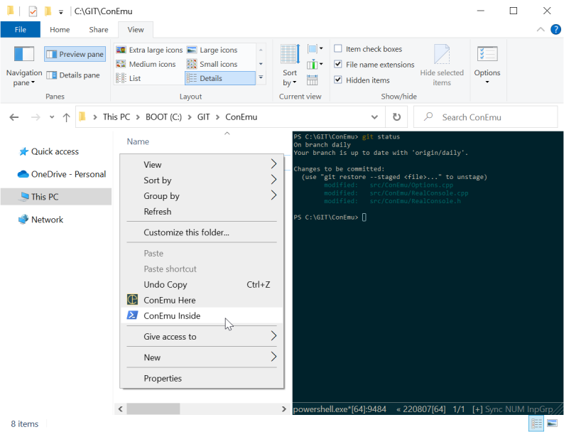

Take a look at screencasts.
Far, cmd, Notepad and PUTTY started in ConEmu

ConEmu Alpha transparency

Fonts


ConEmu (simple console mode)
")
ConEmu (console text selection)

ANSI X3.64 and xterm 256 colors in ConEmu

ConEmu inside Windows Explorer window

Color prompt in ConEmu (another ANSI x3.64)

Customizable Jump list

Progress on Windows7 taskbar

ConEmu system menu (right click on window caption)

ConEmu Thumbnails & Tiles

ConEmu & PanelColorer
 .
.
ConEmu & FarColorer (Far 3.x)
 .
.
Far 2.0 Editor + ConEmu, anti-aliasing disabled

ConEmu and old (DOS) programs
 programs")
 games")
ConEmu with caption hidden

ConEmu in Desktop mode

ConEmu and FarColorer (Far 2.x)
")
")
Confirmation of new console creation (Win-W)

Confirmation of restarting console (Win-~)